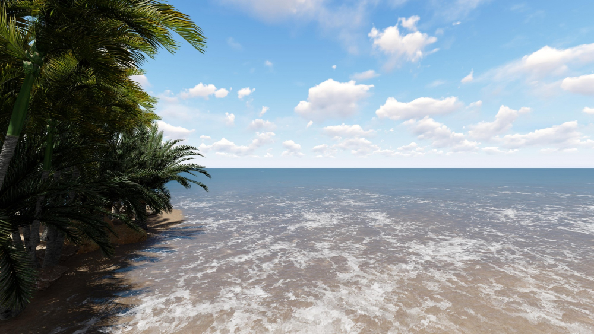

Sobre o lugar
A Praia do Sol, em Laguna, é realmente um lugar encantador e um destino perfeito para quem quer curtir o mar com tranquilidade, mas também gosta de um pouco de agito.
Se você está se perguntando se a Praia do Sol em Laguna é boa, posso te garantir que ela é uma excelente opção para quem busca diversão, relaxamento e belas paisagens.
Com um vasto trecho de areia e águas claras, a Praia do Sol é bastante procurada por famílias e jovens que buscam um ambiente mais relaxante, mas sem abrir mão de uma boa infraestrutura. Além disso, o mar é ótimo para banhos, com águas geralmente calmas, o que faz dela uma boa escolha para quem viaja com crianças.
...Ver maisComo chegar
Para chegar na Praia do Sol, você pode seguir pela BR-101, a principal rodovia que corta o estado de Santa Catarina. Se você estiver vindo de Florianópolis, por exemplo, basta pegar a BR-101 em direção ao sul, até chegar em Laguna.
De lá, é só seguir pela estrada municipal até a praia. A praia tem uma estrada de acesso bem sinalizada e, em geral, o trajeto é tranquilo. 🚗